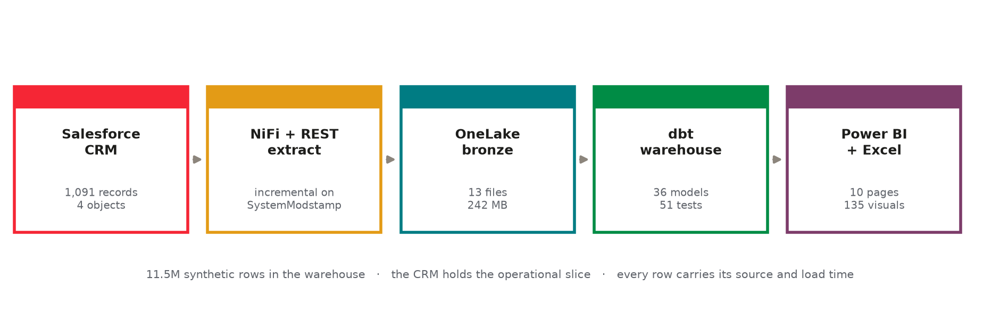
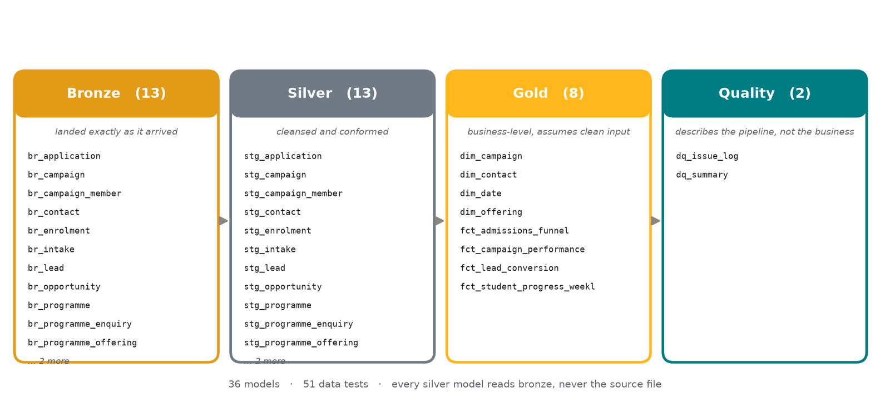
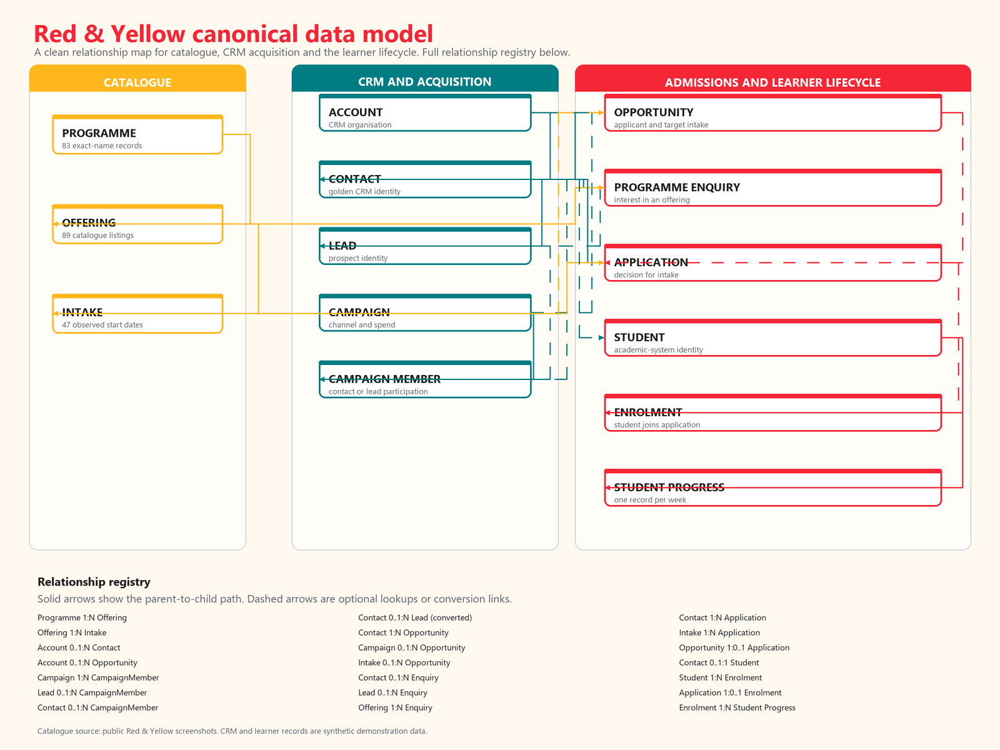
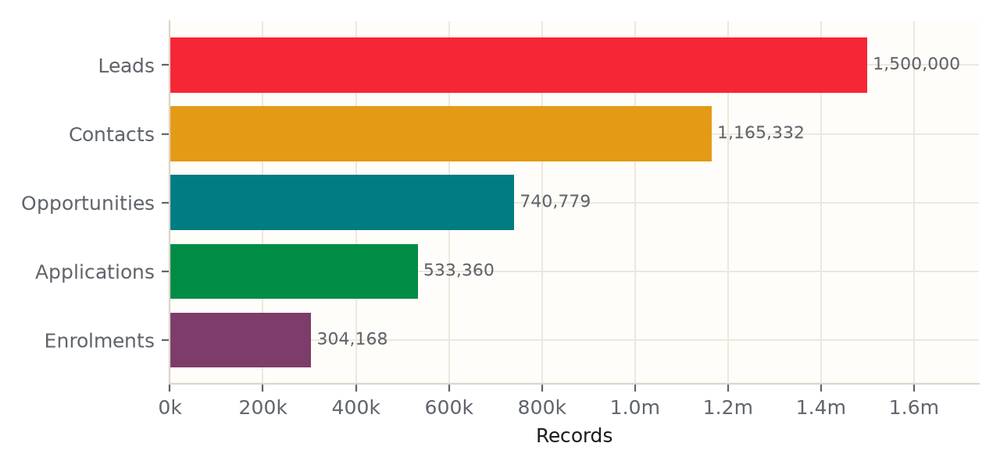
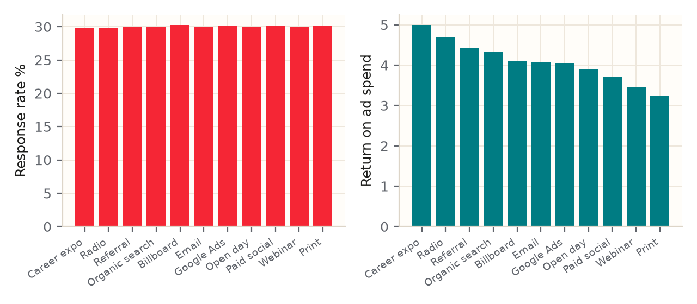
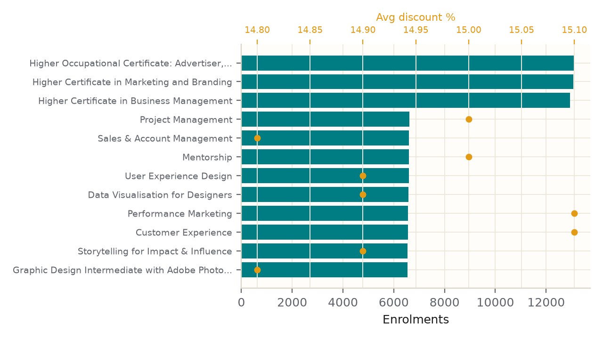
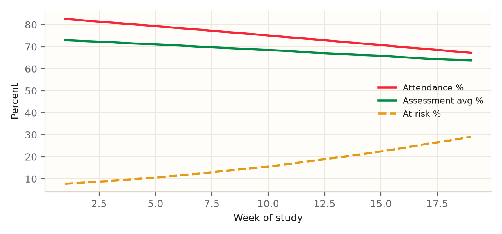
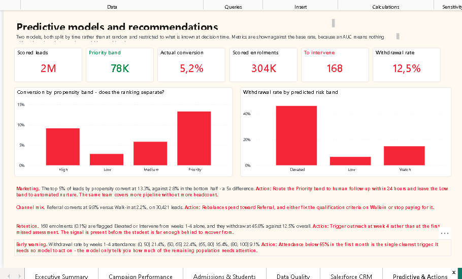
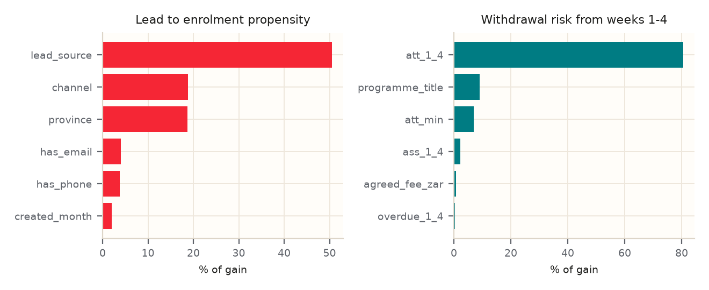

Understand the funnel
Explore campaign performance, CRM activity, applications and enrolments. Compare programme demand and delivery modes.
Connecting marketing, CRM, admissions and learner support through clear reporting, data modelling and early risk analysis.
One ZIP · approximately 175 MiB · Power BI Desktop for Windows required. Public downloads — no GitHub sign-in required.









Explore campaign performance, CRM activity, applications and enrolments. Compare programme demand and delivery modes.
Explore illustrative propensity and withdrawal models, course rankings and learner support priorities.
Review reconciliation, data quality, SEO findings and business and systems analysis recommendations.
The Power BI project includes report and semantic-model definitions, 23 Parquet data files, branding assets and a path-configuration script. The same download includes the ebook PDF and Excel workbook.
Tools: SQL, Python, Power BI, Salesforce, Apache NiFi, dbt, DuckDB and Microsoft Fabric. Documentation also explores a Google Cloud / BigQuery architecture option.
Setup-DataPaths.ps1 with PowerShell. It points the model to that folder's included data files.RedAndYellow.pbip in a current Power BI Desktop version with project support, then select Refresh.The source repository excludes the large data files; use the release ZIP for the complete portable package. The original project filenames are retained so report references continue to work.
This is a portfolio case study. Analytical people, spend and student outcomes are synthetic or illustrative, not an institution's actual results. The ebook distinguishes the live Salesforce demo extract from staged custom-object data and the larger analytical population. Predictive scores support human review; they are not validated production outcomes. Fabric and Google Cloud implementation status and remaining limitations are documented in the ebook.